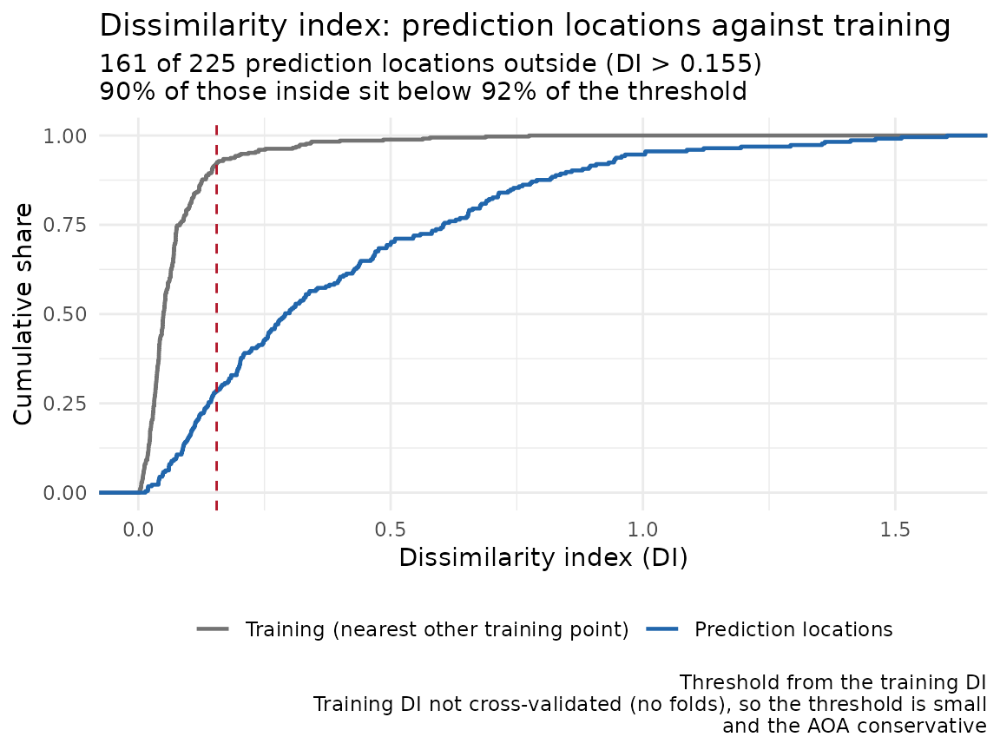

This article needs two optional packages: gstat, which fits the variogram behind the autocorrelation range, and ggplot2 for the figures. When either is missing the code is shown but not run, and a note at the top says so.
Four questions a score does not answer
A cross-validated RMSE tells you how far the predictions fell from
the held-out values. It is silent on four things that decide whether the
analysis holds up: whether the model left spatial structure in its
residuals, whether the standard errors on aggregated values are the
width they claim, whether a cell mean is the best estimate of that cell
available, and where on the map the score applies at all. A fifth
section shows two ways the score itself can be wrong, and a sixth reads
the warnings summarize_by_cell() raises about pooled cell
values.
A fixture and a model that is wrong in a known way
The response is driven by one real predictor and by a spatial field
the model never sees. b is noise. A linear model on
a and b therefore leaves the field in its
residuals, which is what the first diagnostic should detect.
library(sf)
library(spatialkit)
set.seed(11)
n <- 350
xy <- data.frame(x = 5e5 + runif(n, 0, 1000), y = 5e6 + runif(n, 0, 1000))
D <- as.matrix(dist(xy))
field <- as.numeric(t(chol(exp(-D / 70) + diag(1e-8, n))) %*% rnorm(n))
xy$a <- rnorm(n)
xy$b <- rnorm(n)
xy$z <- 1.5 * xy$a + field + rnorm(n, sd = 0.3)
pts <- st_as_sf(xy, coords = c("x", "y"), crs = 32632)
lm_fit <- function(train_sf, response_var = "z", predictor_vars = c("a", "b")) {
d <- st_drop_geometry(train_sf)
# With no predictors the model is intercept-only: "z ~ 1", not "z ~ ".
rhs <- if (length(predictor_vars)) paste(predictor_vars, collapse = " + ") else "1"
fml <- as.formula(paste(response_var, "~", rhs))
new_spatial_fit(
subclass = "lmsurf_fit",
engine = lm(fml, data = d),
formula = fml,
response_var = response_var,
predictor_vars = predictor_vars,
data_sf = train_sf
)
}
predict.lmsurf_fit <- function(object, newdata = NULL, ...) {
if (is.null(newdata)) return(fitted(object$engine))
as.numeric(predict(object$engine, newdata = st_drop_geometry(newdata)))
}
residuals.lmsurf_fit <- function(object, ...) residuals(object$engine)
fitted.lmsurf_fit <- function(object, ...) fitted(object$engine)
for (g in c("predict", "residuals", "fitted"))
registerS3method(g, "lmsurf_fit", get(paste0(g, ".lmsurf_fit")))
fit <- lm_fit(pts)1. Structure left in the residuals
mi <- residual_morans_i(fit)
mi## Residual Moran's I = 0.4480 (E[I] = -0.0029, sd = 0.0253)
## z = 17.841, p = 3.38e-71
## null: residual moments, exact for these residuals; n = 350, df = 347, design rank 3
## residual kurtosis 3.152 (3 = Gaussian)
## weights: 350 x 350 dgCMatrix, 8 neighbour(s) per row; not retained, keep_weights = TRUE to keep itA large positive Moran’s I says nearby residuals resemble each other, so the model is missing something that varies smoothly across the map. Here that is the simulated field, by construction.
Three parts of the print earn attention. The null
says which moments the p-value came from: residual moments
condition on the design matrix and are exact for OLS residuals,
randomisation moments treat the residuals as exchangeable
and are an approximation for any model. null = "auto"
chooses per fit, so read what it chose. The design rank
is the rank of the rebuilt model matrix, which is where the residual
degrees of freedom come from. The kurtosis says how far
the residuals sit from the Gaussian case the moments assume, with 3 as
the reference.
The weight matrix is and is described instead of returned. Ask for it when you want to reuse the same neighbours:
mi_w <- residual_morans_i(fit, keep_weights = TRUE)
dim(mi_w$weights)## [1] 350 350
mi$weights_summary[c("n", "storage", "neighbours", "kept")]## $n
## [1] 350
##
## $storage
## [1] "dgCMatrix"
##
## $neighbours
## [1] 8 8
##
## $kept
## [1] FALSEweights_summary is present either way, so a
NULL in weights is always explained.
2. Standard errors on aggregated values
Aggregate the points into cells and the naive standard error of each cell mean is , which treats the points in a cell as independent. For the cell’s own mean that is the right standard error when the points are spread through the cell. For the cell mean as an estimate of the population (grand) mean it is not: on an autocorrelated field the points in a cell share the cell’s departure from that mean, and the effective sample size is smaller than the count.
hull <- clip_target_for(pts, expand = 0.02, quiet = TRUE)
tess <- build_tessellation(pts, boundary = hull, method = "square",
approx_n_cells = 24, quiet = TRUE)
asg <- assign_features_to_polygons(pts, tess$cells)
c(cells = nrow(tess$cells), points = nrow(asg),
median_per_cell = median(table(asg$poly_id)))## cells points median_per_cell
## 25 350 14summarize_by_cell() takes a design effect, and three
settings are worth comparing on the same cells.
sac <- estimate_sac_range(pts, "z")
iid <- summarize_by_cell(asg, "z", cells_sf = tess$cells, deff = 1)
kish <- summarize_by_cell(asg, "z", cells_sf = tess$cells, deff = "kish")
vgm <- summarize_by_cell(asg, "z", cells_sf = tess$cells, deff = "variogram",
sac = sac)
data.frame(n = iid$n,
iid = round(iid$..se_resp_z, 3),
kish = round(kish$..se_resp_z, 3),
variogram = round(vgm$..se_resp_z, 3))[1:5, ]## n iid kish variogram
## 1 14 0.546 1.072 1.272
## 2 11 0.447 0.805 0.963
## 3 18 0.381 0.822 0.987
## 4 16 0.592 1.222 1.467
## 5 8 0.527 0.854 0.996The median cell’s standard error is 1.96 times wider under
kish and 2.35 times wider under variogram than
the independent-sampling one. As an estimate of the population mean, a
confidence interval built on the naive number is about half the width it
should be on this field. For the cell’s own mean the naive standard
error is the right one, and section 3 (kriging_adequacy())
covers that quantity.
deff = "kish" estimates an intra-class correlation from
the within-cell and between-cell variance and applies Kish’s factor.
deff = "variogram" takes the correlation from the fitted
variogram model, so it uses the spatial structure rather than the cell
labels. When no usable variogram exists that request falls back to
"kish" with a warning, and the deff_method
column names the correction each row carries. The choice is
recorded:
## List of 6
## $ method : chr "variogram"
## $ deff : num [1:25] 4.12 3.49 5.11 4.65 2.71 ...
## $ deff_rows: num [1:25] 4.12 3.49 5.11 4.65 2.71 ...
## $ rbar : num [1:25] 0.24 0.249 0.242 0.243 0.244 ...
## $ crs :List of 2
## ..$ input: chr "EPSG:32632"
## ..$ wkt : chr "PROJCRS[\"WGS 84 / UTM zone 32N\",\n BASEGEOGCRS[\"WGS 84\",\n ENSEMBLE[\"World Geodetic System 1984 "| __truncated__
## ..- attr(*, "class")= chr "crs"
## $ max_n : int 500
attr(kish, "icc")$resp## [1] 0.1692353A cell whose design effect reaches its point count carries no
information about the variance at all, and its standard error is
NA. That is a statement about the cell, so the fix is
bigger cells or more points, not a different setting.
3. Is the cell mean the best estimate of the cell?
The plain mean weights every point in a cell equally and ignores
everything outside it. Block kriging uses the fitted variogram, borrows
from neighbouring cells, and reports a variance derived from the spatial
model. kriging_adequacy() runs both and compares them.
ka <- kriging_adequacy(asg, "z", tess$cells, k = 4, seed = 1)
ka## Block-kriging adequacy over 25 cells (350 points, nmax 50)
## variogram: Nug(2.34, 0) + Exp(1.49, 208); sill 3.83, nugget 2.34 (61%), range 623.8
## kriging variance / no-data variance of the cell mean (1 = nothing from the data): median 0.130, range 0.090-0.217; 0 cell(s) above 0.5
## kr_gain, the share of the plain mean's error variance that kriging removes under this variogram (1 - kr_var / plain_var): median 0.44, range 0.23-0.59 over the 25 cell(s) with points and a kriged estimate
## kriged minus plain mean, over the standard deviation the variogram gives that difference (sqrt(plain_var - kr_var)): |shift| > 1 in 7 of 25 cell(s), > 2 in 0 (about 8 and 1 when the variogram is right)
## naive s^2/n below plain_var (the naive standard error is too small if the variogram is right) in 15 of the 25 cell(s) with two or more points; median s^2/n over plain_var 0.85
## empty cells: 0 (kriged estimate and variance available for each)
## blocked CV (block_kfold, 4 folds, 350 points): var of standardised error 0.96 (1 = kriging variance correct; above 1 = understated), mean -0.04, RMSE 1.76Four readings. plain_var is the error variance of the
plain mean under the fitted variogram; a naive se^2 below
it says the naive standard error was optimistic. kr_gain is
the share of that variance kriging removes in the cell.
kr_shift is how far the kriged estimate moved from the
plain mean, over the standard deviation the variogram gives that
difference: about a third of cells beyond 1 and one in twenty beyond 2
is what a right variogram produces, and more says the means and the
model disagree. The blocked cross-validation at the end standardises
each held-out error by its kriging variance: a variance of 1 means the
kriging variance is right, and above 1 means it is understated.
head(st_drop_geometry(ka)[, c("n", "mean", "se", "plain_var", "kr_pred", "kr_var",
"kr_gain", "kr_shift")], 4)## Block-kriging adequacy (subset; the fitted summary is not carried by a subset)
## n mean se plain_var kr_pred kr_var kr_gain kr_shift
## 1 14 1.1020196 0.5463243 0.2142987 0.9482129 0.1388290 0.3521708 -0.5598719
## 2 11 0.3804887 0.4470487 0.3160037 0.5214518 0.1528265 0.5163774 0.3489599
## 3 18 1.0791003 0.3805235 0.1817638 0.8801141 0.1183908 0.3486557 -0.7904436
## 4 16 1.5055114 0.5920044 0.1846308 1.2414270 0.1078652 0.4157788 -0.9531463An empty cell still gets a kriged estimate and variance, which is the
practical reason to run this: a tessellation fine enough to be useful
usually has cells with no observation in them. This grid has none, as
the report’s empty cells line says, because 25 cells over
350 points leaves every cell populated; the reporting vignette’s grid
over the North Carolina counties has five.
4. Where the score applies
A cross-validated number describes the region the training data
covers. For predictions made anywhere else, it describes nothing.
area_of_applicability() marks the difference, following
Meyer and Pebesma (2021).
grid <- create_grid_polygons(hull, target_cells = 200, type = "square")
gp <- suppressWarnings(st_centroid(grid))
set.seed(2)
gp$a <- rnorm(nrow(gp))
gp$b <- rnorm(nrow(gp), mean = 3) # shifted well outside the training range
aoa <- area_of_applicability(gp, model = fit)
aoa## Area of applicability (Meyer & Pebesma 2021)
##
## predictors : 2 (a, b)
## weighted : no (all predictors count equally: the model carries no variable importance)
## training : 350 points
## reference : nearest other training point (no folds supplied)
## normaliser : 1.7610 (mean pairwise distance)
## threshold : 0.1552 (outlier-removed max of training DI)
## location : not measured
##
## 64 of 225 prediction points inside the AOA (28.4%)
##
## Predictions outside the AOA are extrapolations; the cross-validated
## performance estimate does not cover them.
plot(aoa)
Shifting one predictor three standard deviations moves most of the
grid outside the domain the model was trained on. The dissimilarity
index DI is on aoa$aoa, alongside the logical
AOA, and threshold is the cutoff derived from
the training data.
One trap worth stating plainly. AOA is NA
wherever a predictor was missing or non-finite, !NA is
NA, and R skips NA positions in a subscripted
assignment. Test for TRUE:
inside <- !is.na(aoa$aoa$AOA) & aoa$aoa$AOA
c(inside = sum(inside), outside_or_unknown = sum(!inside))## inside outside_or_unknown
## 64 1615. Two ways to leak
Coordinates as predictors. A model given
x and y can reproduce the training surface by
memorising location, and random folds will not detect it.
fit_rf_model(include_coords = TRUE) logs a caution (once
per session) for this reason. Score any such model with blocked folds,
and read vignette("spatial-cross-validation") for what the
blocking has to be wide enough to do.
Selection outside the fold. Choosing predictors on
the whole data set and then cross-validating the chosen set gives the
selection a look at every test row.
select_features_forward() does the selection inside the
resampling, and it takes the fold scheme as an argument for the same
reason the outer loop does. Blocked folds only keep test rows apart from
training rows if the blocks are at least as wide as the autocorrelation
range. make_folds() estimates that range for what the
candidates leave unexplained, about 320 m on this field, and warns when
the blocks are narrower. The default grid here has blocks about 250 m
across, so block_size = 400 is passed:
# select_features_forward() calls fit_fn(train_sf, vars), so the learner above
# needs an adapter that puts `vars` in the predictor slot. Step 0 fits it with
# no predictors at all, which is why lm_fit() builds "z ~ 1" for an empty set.
sel_fn <- function(train_sf, vars) lm_fit(train_sf, "z", vars)
sel <- select_features_forward(pts, "z", c("a", "b"), fit_fn = sel_fn,
k = 4, method = "block_kfold",
block_size = 400, seed = 1)
sel$selected## [1] "a"
sel$history## step variable score n_pred gain fold_gain fold_gain_se
## 1 0 <none> 1.886912 350 NA NA NA
## 2 1 a 1.113470 350 0.773441581 0.758268480 0.0635599357
## 3 1 b 1.887999 350 -0.001087626 -0.001111525 0.0003395323
## 4 2 b 1.116468 350 -0.002998125 -0.002133347 0.0038235429history has one row per candidate scored at each step.
Step 0 is the intercept-only model, so a had to beat it to
be added, and at step 2 adding the noise variable b made
the cross-validated RMSE slightly worse, so the selection stopped at
a. A candidate is added when its pooled gain
exceeds tol and the mean of its per-fold gains
(fold_gain) exceeds one standard error of that mean
(fold_gain_se), from step 1 on; rule = "tol"
tests the pooled gain alone.
Its inner folds default to the scheme you pass. Passing
random_kfold there logs a caution, because a leaky inner
loop can select a variable for being spatially close to the response and
an honest outer loop will then report a respectable number for a
dishonestly chosen feature set.
6. Warnings about pooled cell values
summarize_by_cell() returns by default, beside each
cell’s mean, a pooled value: the mean pulled toward the mean of the
cells around it. What it has to say about those values, and about
whether the cells are the ones their count was chosen for, comes as R
warnings with a class. Each is raised once per call and reason and
carries its numbers as fields, so it can be caught and read without
matching its text; a warning about the pooled columns also names the
columns it applies to. This vignette hides warnings, so the helper below
runs a call and returns the classes it raised:
raised <- function(expr) {
seen <- character(0)
withCallingHandlers(expr, warning = function(w) {
seen <<- c(seen, class(w)[1])
invokeRestart("muffleWarning")
})
seen
}The cells are built for pooled values at 4.5 observations per cell,
by the calls vignette("resolution") and
vignette("reporting") walk through. Those are the defaults,
so nothing is named but the response; estimate = "mean" in
the summary gives the plain means alone, and
vignette("resolution") lists the profile’s earlier
defaults:
prof <- resolution_profile(pts, "z")
size <- select_resolution(prof)
seeds <- get_voronoi_seeds(method = "kmeans", n = size, sample_points = pts)
vor <- build_tessellation(seeds, method = "voronoi", quiet = TRUE)
asg_v <- assign_features_to_polygons(pts, vor$cells, polygon_id_col = "cell_id")
raised(summarize_by_cell(asg_v, "z", id_col = "cell_id", cells_sf = vor$cells))## character(0)A summary of the cell value the count was chosen for, on the cells and rows that were scored, raises nothing. Each of the five warnings below is a departure from that.
spatialkit_estimate_mismatch: the count was
chosen for the other cell value. The selection wrote down that
the count was set for pooled values, the cells and the assigned layer
carried that record, and this call asks for plain means:
w <- tryCatch(
summarize_by_cell(asg_v, "z", id_col = "cell_id", cells_sf = vor$cells,
estimate = "mean"),
spatialkit_estimate_mismatch = function(w) w)
unlist(unclass(w)[c("chosen_for", "reported", "rule", "cells")])## chosen_for reported rule cells
## "pooled" "mean" "size" "78"The summary is returned as asked. Report the value the count was
chosen for, or choose the count for the value reported:
resolution_profile(estimate = "mean") with
select_resolution(criterion = "loo").
spatialkit_cells_differ: these are not the cells
and rows that were scored. The summary fits the response again
on what it is given and compares the rows, the cells that hold one and
the leave-one-out error with the record. Here twenty rows were dropped
after the assignment:
w <- tryCatch(
summarize_by_cell(asg_v[-(1:20), ], "z", id_col = "cell_id",
cells_sf = vor$cells),
spatialkit_cells_differ = function(w) w)
w$what## [1] "n"## n cells loo
## scored 350 78 2.935117
## found 330 78 3.004029what names the first comparison that failed:
"n" for another number of rows with a response,
"cells" for another number of cells that hold one,
"loo" for the same rows in the same number of cells with
another error, which means rows sit in other cells, and
"record" when the assigned layer and cells_sf
carry different records. The usual causes are rows filtered after the
assignment, a boundary that leaves points in no cell, and a layer other
than the one profiled. On gridded locations a row can lie the same
distance from two centres, on the boundary between their cells. The
profile scores it in the cell of the lower-numbered centre, and
assign_features_to_polygons() gives a point there the same
cell when the cells carry the record of the centres scored, so a lattice
passes the check. build_tessellation() draws those cells in
the profile’s CRS whatever CRS the seeds come back in. Cells built in
another projected CRS, named with its crs, are the
nearest-centre cells of that CRS, so rows near a boundary, on it or not,
can sit in another cell, and the warning then speaks of them. The values
returned describe the cells as given, and
attr(, "count_rule")$check keeps the outcome. Cells the
caller brings carry no record and are not checked.
spatialkit_no_structure: the cells predict no
better than one mean. b is noise by
construction:
noise <- summarize_by_cell(asg_v, "b", id_col = "cell_id")
raised(summarize_by_cell(asg_v, "b", id_col = "cell_id"))## [1] "spatialkit_no_structure"
as.data.frame(attr(noise, "pooled")$columns$resp_b[
c("loo", "loo_one_cell", "structure_p", "own_weight", "structured")])## loo loo_one_cell structure_p own_weight structured
## 1 1.109034 1.074528 0.7556459 0.03572578 FALSEstructured is FALSE when the leave-one-out
error of one mean for all rows (loo_one_cell) is within 2
percent of that of the pooled values (loo) or below it, or
when the F test of the cell means against one mean has
p >= 0.05. The values are returned, and a map of them
still looks smooth, because each is mostly the mean of its neighbours.
On 200 simulated layers with white noise as the response the median own
weight was 0.11 and a cell’s pooled value had a correlation of 0.79 with
the mean of its 8 nearest cells’ values, where the plain means had one
of -0.02 (dev/sim-pooled-values.R in the package’s
repository; ?summarize_by_cell gives the settings). Read
the warning as: one mean describes this column, and the map shows the
pooling.
spatialkit_pool_degenerate: the values were
computed and carry no pooling. Its reason says
which of three cases it is. A column that does not vary inside any cell
is one of them:
asg_v$flat <- 1
w <- tryCatch(summarize_by_cell(asg_v, "flat", id_col = "cell_id"),
spatialkit_pool_degenerate = function(w) w)
w$reason## [1] "no spread inside any cell"With "no spread inside any cell" and with
"one cell" every own weight is 1 and the pooled value is
the plain mean. With "no signal between cells" the cell
means differ from their neighbours’ by no more than the spread inside
the cells explains: every own weight is 0, and each pooled value is the
mean of the cell’s neighbours and holds none of the cell’s own
observations. That last case is not the test for a response without
structure. In the simulation it came on 20 of the 200 white-noise layers
and spatialkit_no_structure on all 200.
spatialkit_pool_few_cells: 2 to 9
cells. The neighbours of a cell are then all the other cells,
so its target is the mean of every observation outside it:
few <- create_grid_polygons(hull, target_cells = 4, type = "square")
asg_f <- assign_features_to_polygons(pts, few, quiet = TRUE)
raised(four <- summarize_by_cell(asg_f, "z"))## [1] "spatialkit_pool_few_cells"
as.data.frame(four)[, c("poly_id", "n", "resp_mean_z", "..pooled_resp_z",
"..pooled_w_resp_z", "..pooled_target_resp_z")]## poly_id n resp_mean_z ..pooled_resp_z ..pooled_w_resp_z
## 1 1 88 0.06747028 0.085370087 0.8870278
## 2 2 90 0.89167351 0.786488402 0.8892603
## 3 4 96 -0.18343249 -0.130203153 0.8954580
## 4 5 76 -0.04541381 -0.007411179 0.8714826
## ..pooled_target_resp_z
## 1 0.22591468
## 2 -0.05816763
## 3 0.32573445
## 4 0.25028643The overall mean lies between a cell’s own mean and that target. A
cell whose own weight is below its share of the observations therefore
gets a pooled value on the far side of the overall mean from its plain
mean, and two cells can change order. The ..pooled_w_*
column shows how close each cell is to that, and
estimate = "mean" gives the plain means.
?summarize_by_cell lists these classes and the others of
the pooled values under “Conditions”, with the fields each carries.
Next
vignette("spatial-cross-validation") covers fold schemes
and block sizing. vignette("resolution") covers choosing
the cell count these diagnostics are computed over.
?residual_morans_i documents the two nulls and when each is
exact, ?summarize_by_cell derives the design-effect
correction and reports its measured coverage, and
?area_of_applicability covers the weighting and the
threshold.